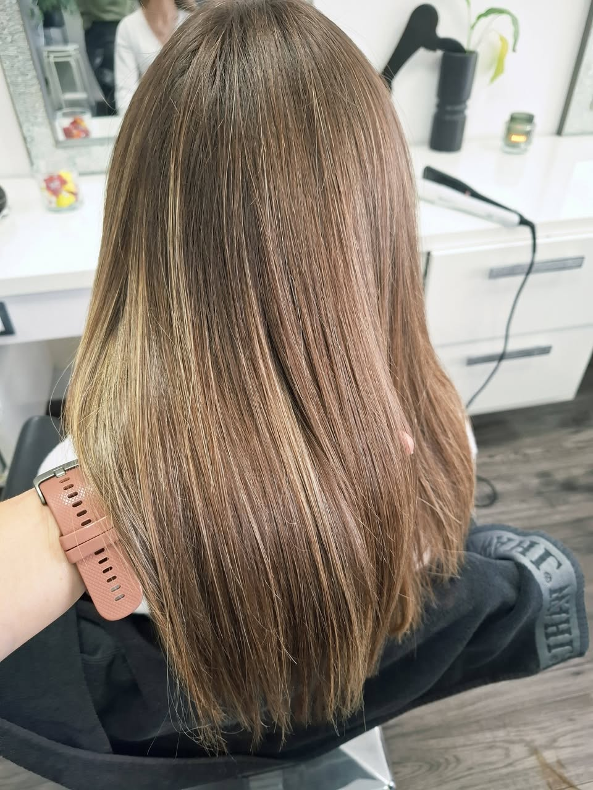
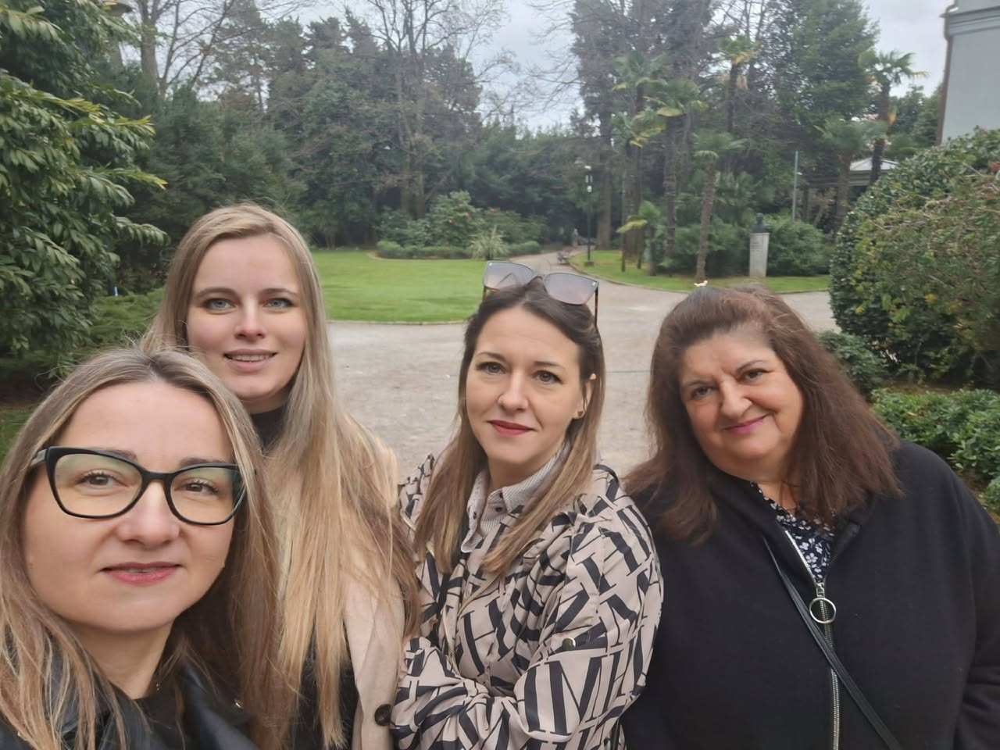
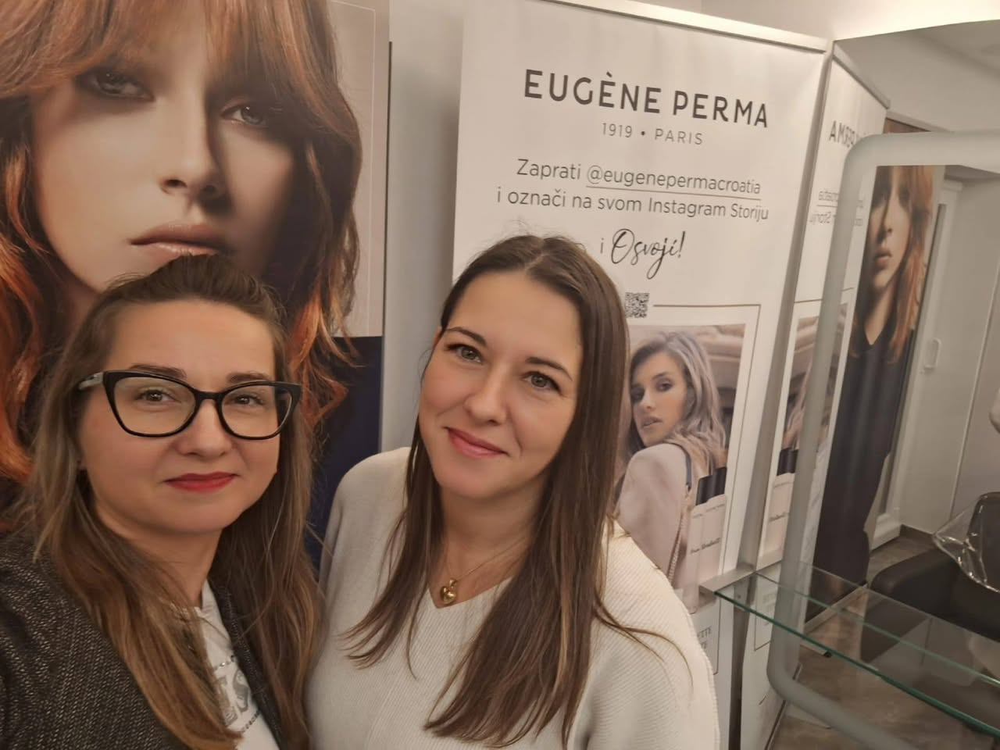
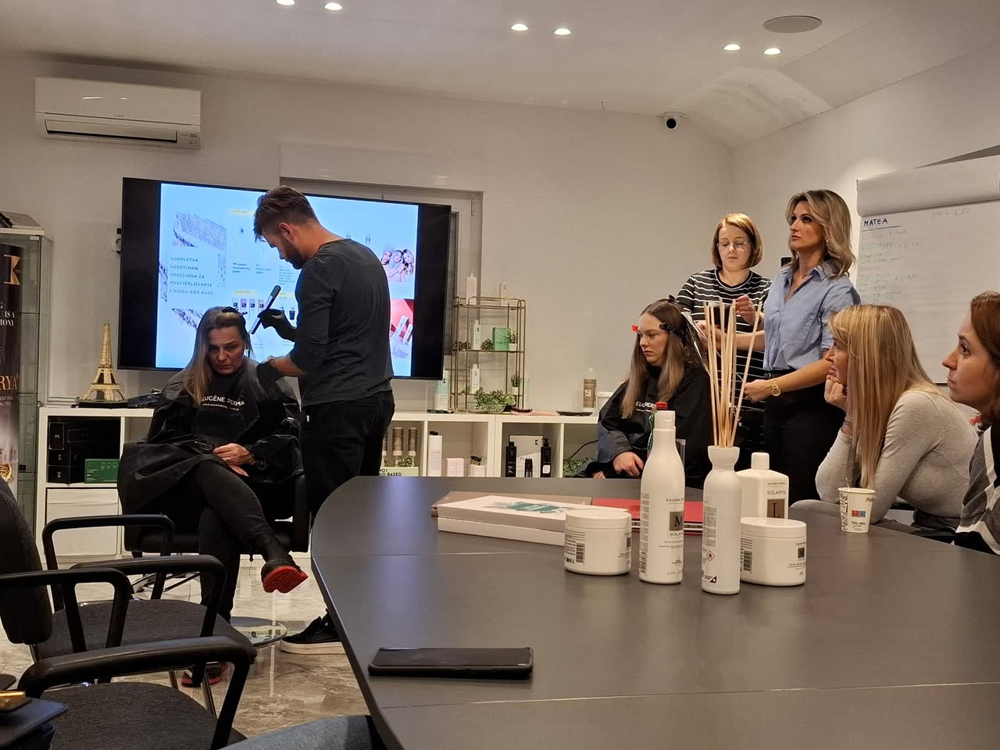
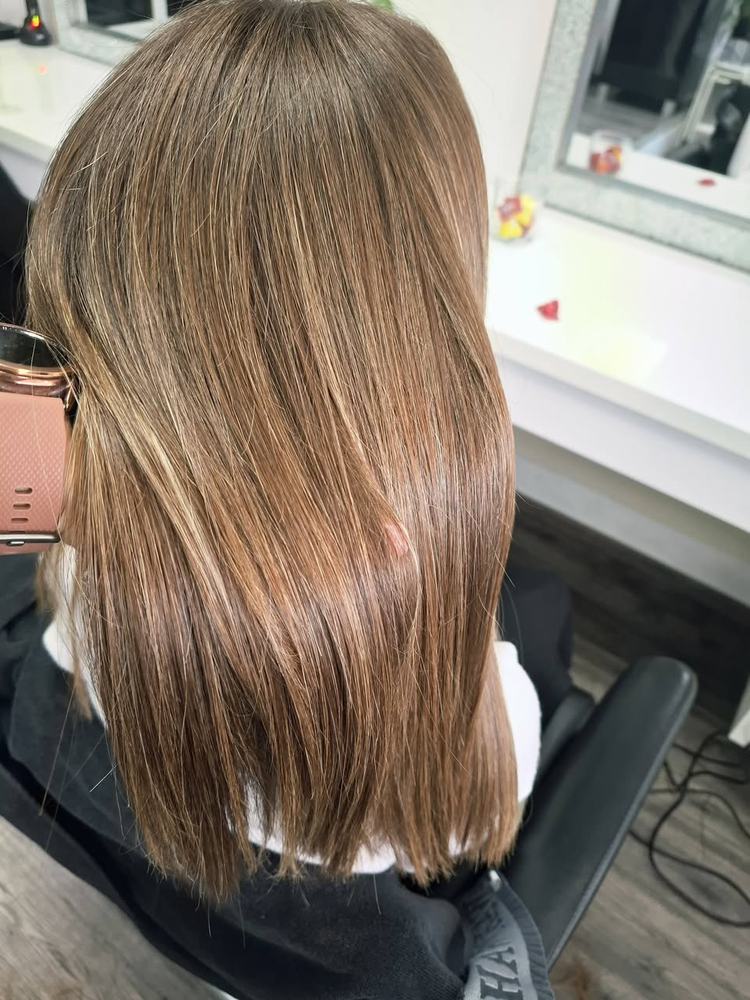
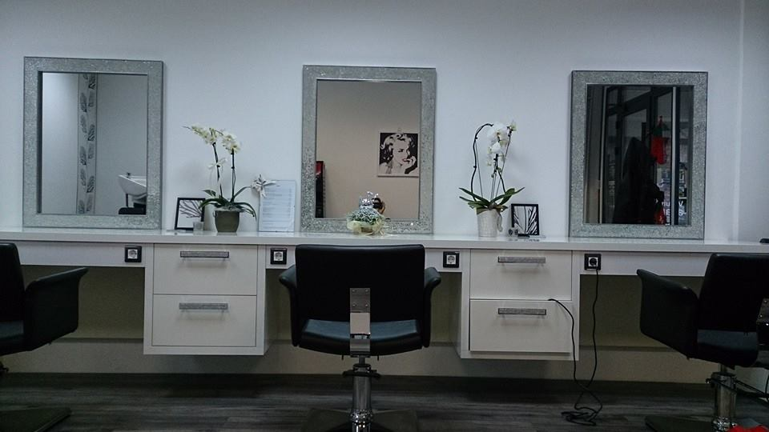

Sveti Ivan Zelina Od 2002.
Kosa koja
govori o vama.
Ljepota. Stil. Stručnost. Inspiracija.
Šišanje, bojanje i pramenovi u Svetom Ivanu Zelini. U Salonu Nina biramo nijansu i oblik prema vašoj kosi i vremenu koje joj želite posvetiti kod kuće.

Od 2002.Gradimo povjerenje
Četiri djelatniceIskustvo i osobni pristup
Eugène Perma ParisNaš izbor za profesionalnu njegu
01 Ljudi iza vaše frizure
Četiri frizerke.
Jedna ljubav prema kosi.
Ljepota, stil i povjerenje od 2002.
U Salonu Nina vjerujemo da je svaka kosa posebna. Slušamo vaše želje, upoznajemo vaš stil i zajedno biramo frizuru koju ćete voljeti i izvan salona.
Naš tim od četiri djelatnice spaja dugogodišnje iskustvo, kreativnost i suvremene tehnike. Želimo da svaki posjet bude vaš trenutak za sebe — uz stručan savjet i osjećaj povjerenja.

02 Uvijek u trendu
Znanje koje raste.
Stil koji je vaš.
Učenje nikada ne prestaje. Nove tehnike, stručne edukacije i razmjena iskustava dio su našeg rada.
Pratimo trendove šišanja, bojanja i stiliziranja, a zatim ih prilagođavamo vašoj kosi, osobnosti i svakodnevnom životu.




„Trend je inspiracija. Pravi profesionalac zna kako ga prilagoditi vama.”
03 Profesionalna njega i boja
Francuska tradicija.
Naš stručni odabir.
U našem salonu radimo s francuskim profesionalnim brendom Eugène Perma Paris. S tradicijom od 1919. godine, brend povezuje iskustvo, kreativnost i inovacije u njezi, bojanju i oblikovanju kose.
Vjerujemo da lijepa kosa nastaje spojem kvalitetnih proizvoda, pravilne tehnike i stručnosti frizera. Zato svaki tretman započinje razumijevanjem vaše kose i onoga što želite postići.
Carmen
Rituel.
Boja koja spaja
ljepotu i njegu.
Carmen Rituel povezuje intenzitet i postojanost boje s njegom kose i vlasišta. Cjelokupni ritual u prosjeku sadrži 95 % sastojaka prirodnog podrijetla, uz organska biljna ulja.
-
01
Bojanje
Profesionalna krema za bojanje obogaćena biljnim uljima.
-
02
Čišćenje
Gel za pranje koji nježno čisti kosu nakon bojanja i pomaže uravnotežiti pH vlasi.
-
03
Njega
Završni balzam koji upotpunjuje tretman i ostavlja kosu njegovanom.
Više o formuli i rezultatima
Snaga prirodnih ulja. Krema za bojanje sadrži organsko ulje sacha inchi, bogato omega-3, omega-6 i omega-9 masnim kiselinama, te kokosovo ulje (coprah). Sacha inchi pridonosi ugodi vlasišta, a kokosovo ulje pomaže zaštititi vlas od isušivanja i pridonosi sjaju. Jojoba je dio završne njege rituala.
Rezultat prilagođen vašoj kosi. Od bojanja ton na ton do trajnog bojanja, uz mogućnost posvjetljivanja do tri tona kod trajnog bojanja i prekrivanja do 100 % sijedih vlasi, ovisno o odabranoj tehnici i kosi.
Formula je bez amonijaka, PPD-a, rezorcinola i mineralnih ulja. To ne isključuje mogućnost alergijske reakcije; test upozorenja na alergiju provodi se 48 sati prije uporabe prema uputama proizvođača.
Podaci o formuli: Eugène Perma Professionnel
04 Usluge i cjenik
Pronađimo ono
što vam odgovara.
Želite posvijetliti kosu? Pogledajte kako se razlikuju balayage i klasični pramenovi te koliko tretman košta za vašu duljinu kose.
Balayage i pramenoviVaš izbor.
Jasne cijene.
Pogledajte sve usluge prema duljini kose, s aktualnim cijenama i cijenama na 10.09.2026. Za pomoć pri odabiru rado smo tu.
Pogledajte cjenik05 Iz salona
Ljepota je
u detaljima.




Veselimo se vašem dolasku
Vrijeme je za vaš trenutak.
Radno vrijeme
- Ponedjeljak – petak
- 8:00 – 20:00
- Subota
- 8:00 – 14:00
- Nedjelja i blagdani
- Zatvoreno